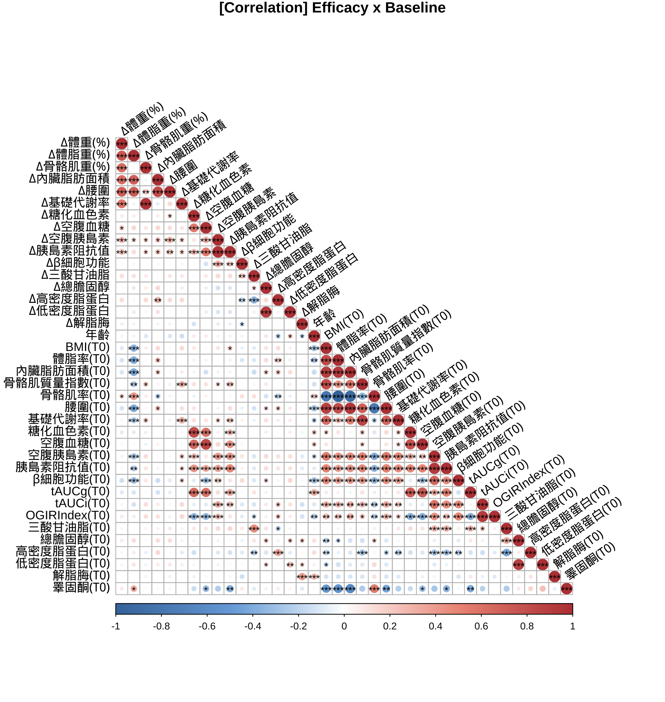
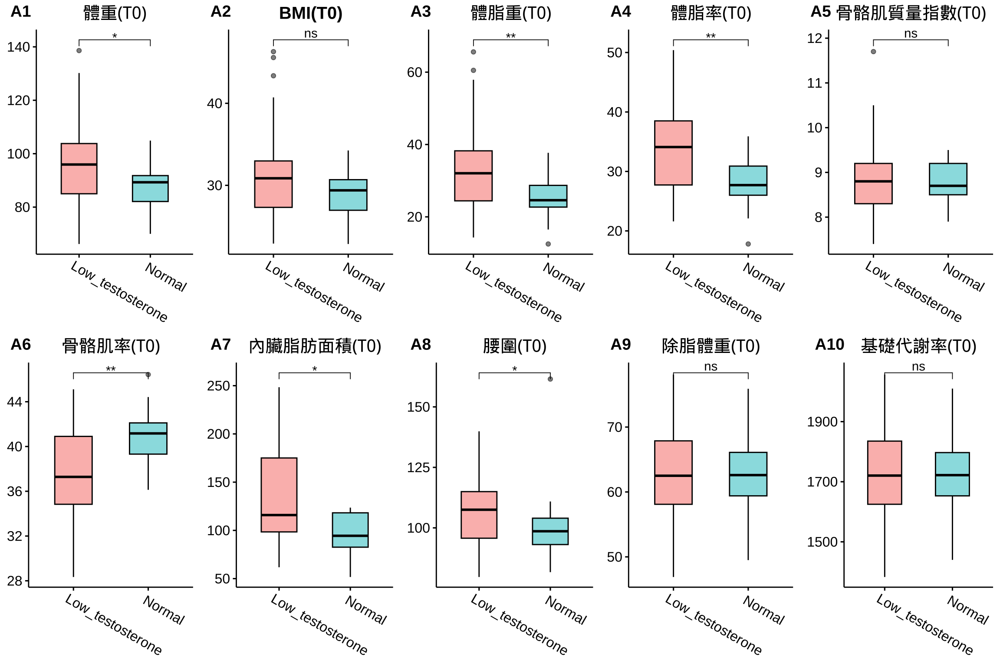
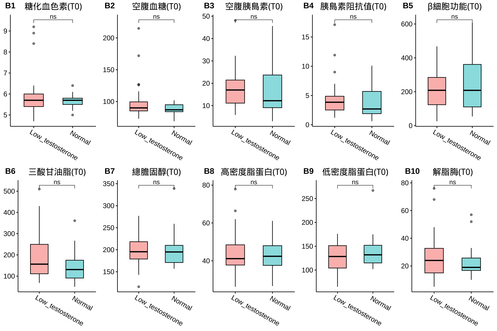
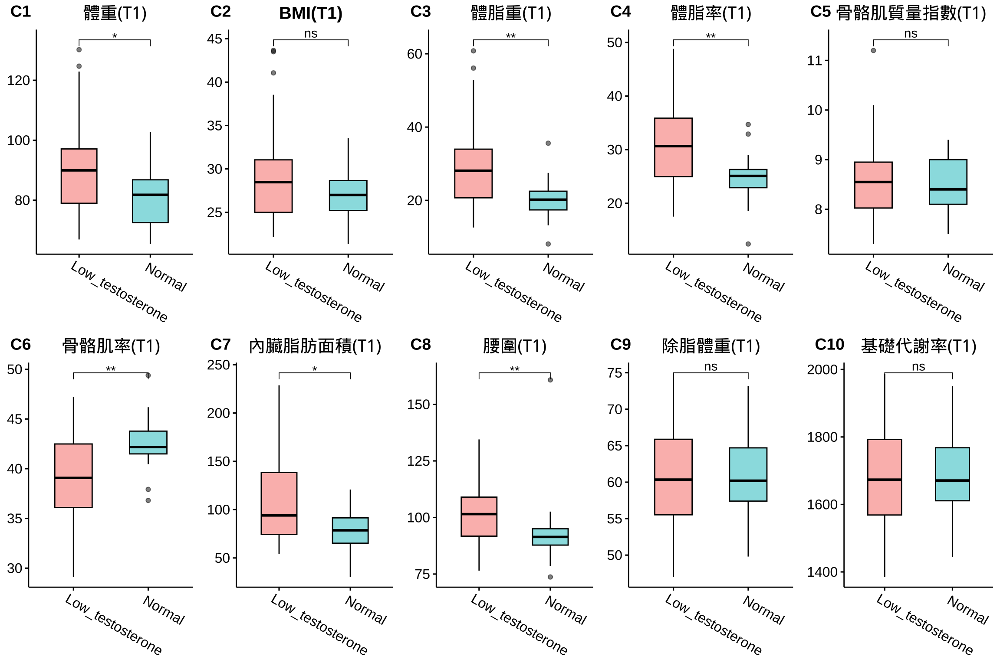
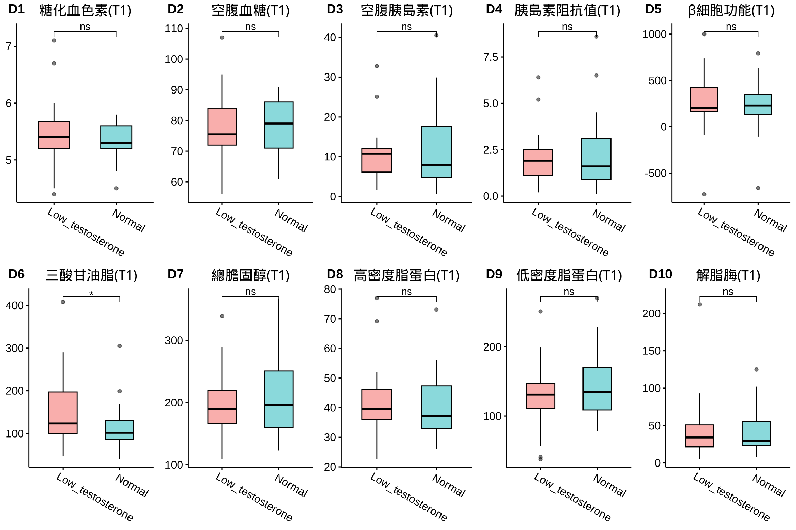
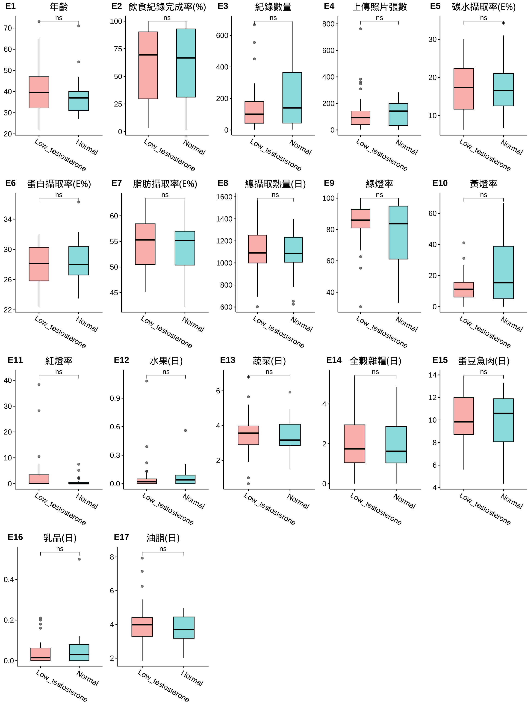
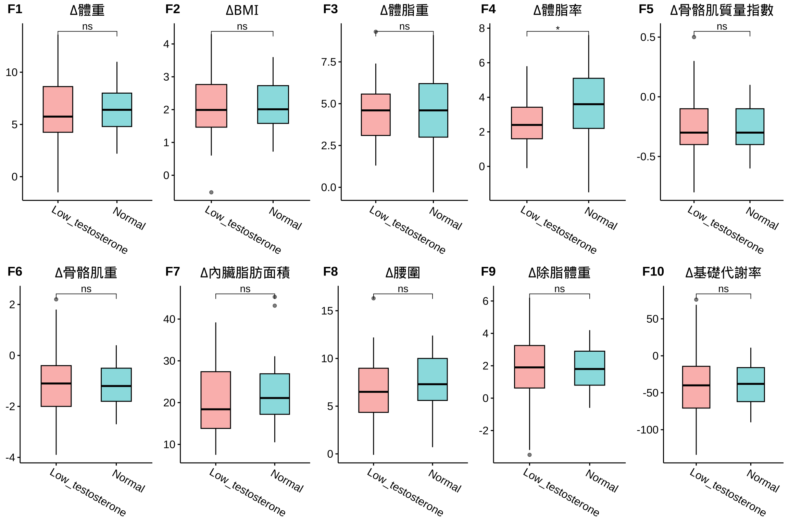
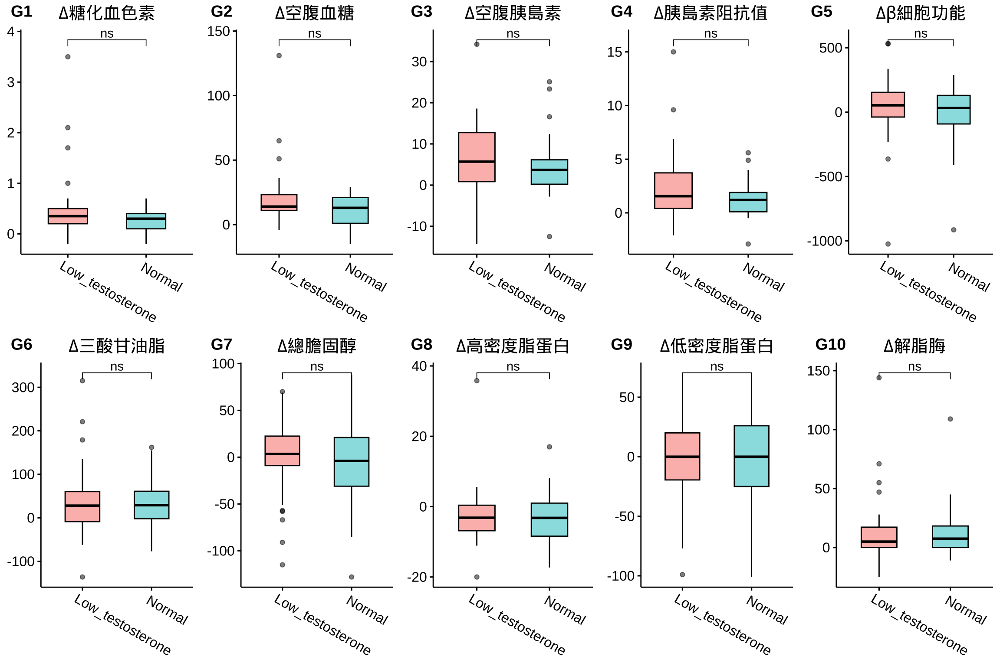
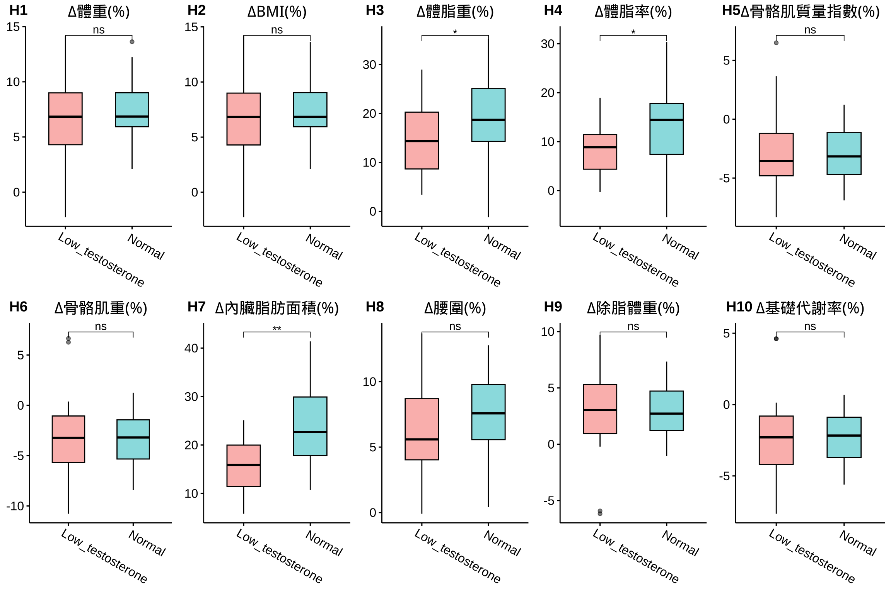
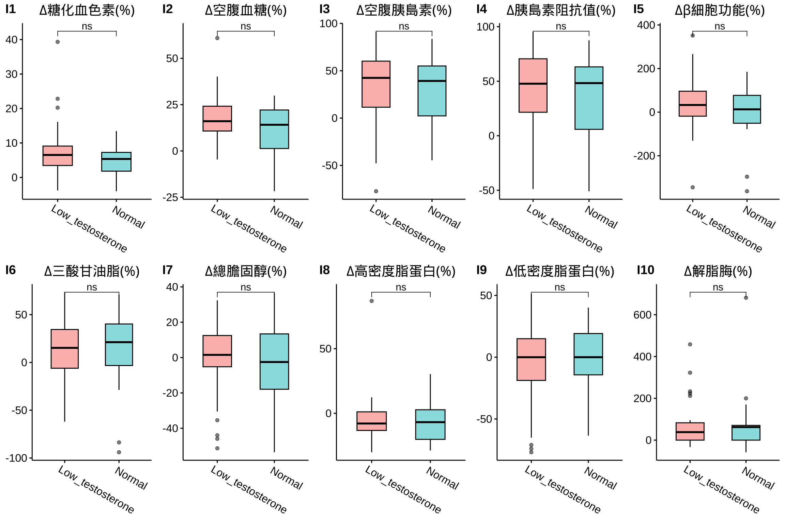

依據睪固酮(Testosterone)初始狀態進行分層分析，分成二個組別：
男性睪固酮分組&年齡分佈
|
|
|
睪固酮(Testosterone) x 初始狀態(Baseline)
男性荷爾蒙「睪固酮」血中濃度與「體重」、「體脂」，以及「空腹血糖」、「空腹胰島素」和「胰島素抗性」(IR)具有顯著負相關。換句話說，相較於「睪固酮」濃度正常的人，「睪固酮」低下者傾向有較高的「體重」、「體脂」，「空腹血糖」、「空腹胰島素」和「胰島素抗性」(IR)也較高。





在分層分析中顯示，減重表現優異者在飲食紀錄完成度、綠燈率、三大營養素攝取比例、六大類食物攝取量等均優於減重表現低於預期者，具統計上顯著差異。





| Low | Normal | 顯著差異 | |
|---|---|---|---|
| 人數 | 34 | 21 | |
| 體重(T0) | 96.7 ± 2.88 | 87.31 ± 2.03 |
|
| BMI(T0) | 31.6 ± 0.99 | 28.93 ± 0.58 | ns |
| 體脂重(T0) | 33.35 ± 2.14 | 24.78 ± 1.25 | ** |
| 體脂率(T0) | 33.58 ± 1.26 | 28.1 ± 0.99 | ** |
| 骨骼肌質量指數(T0) | 8.84 ± 0.15 | 8.77 ± 0.11 | ns |
| 骨骼肌率(T0) | 37.53 ± 0.71 | 40.75 ± 0.57 | ** |
| 內臟脂肪面積(T0) | 135.27 ± 8.86 | 96.6 ± 4.86 |
|
| 腰圍(T0) | 108.19 ± 2.55 | 100.4 ± 3.49 |
|
| 除脂體重(T0) | 63.35 ± 1.26 | 62.54 ± 1.18 | ns |
| 基礎代謝率(T0) | 1738.38 ± 27.3 | 1720.81 ± 25.55 | ns |
| 糖化血色素(T0) | 5.95 ± 0.17 | 5.63 ± 0.07 | ns |
| 空腹血糖(T0) | 98.41 ± 4.69 | 87.95 ± 1.81 | ns |
| 空腹胰島素(T0) | 17.43 ± 1.54 | 16.39 ± 2.42 | ns |
| 胰島素阻抗值(T0) | 4.4 ± 0.55 | 3.59 ± 0.53 | ns |
| β細胞功能(T0) | 215.21 ± 19.33 | 261.52 ± 40.54 | ns |
| 三酸甘油脂(T0) | 191.15 ± 18.34 | 145.38 ± 17.04 | ns |
| 總膽固醇(T0) | 198.53 ± 5.75 | 201.19 ± 9.29 | ns |
| 高密度脂蛋白(T0) | 44.11 ± 1.84 | 43.3 ± 2.02 | ns |
| 低密度脂蛋白(T0) | 125.03 ± 4.97 | 139.43 ± 8.09 | ns |
| 解脂脢(T0) | 26.65 ± 2.8 | 23.2 ± 2.73 | ns |
| 體重(T1) | 90.21 ± 2.78 | 80.88 ± 2.1 |
|
| BMI(T1) | 29.51 ± 0.98 | 26.8 ± 0.61 | ns |
| 體脂重(T1) | 28.9 ± 2.09 | 20.11 ± 1.26 | ** |
| 體脂率(T1) | 30.99 ± 1.35 | 24.5 ± 1.06 | ** |
| 骨骼肌質量指數(T1) | 8.57 ± 0.14 | 8.52 ± 0.12 | ns |
| 骨骼肌率(T1) | 38.9 ± 0.76 | 42.64 ± 0.59 | ** |
| 內臟脂肪面積(T1) | 109.65 ± 7.63 | 78.93 ± 4.85 |
|
| 腰圍(T1) | 101.54 ± 2.59 | 93 ± 3.79 | ** |
| 除脂體重(T1) | 61.31 ± 1.17 | 60.76 ± 1.19 | ns |
| 基礎代謝率(T1) | 1694.32 ± 25.22 | 1682.38 ± 25.64 | ns |
| 糖化血色素(T1) | 5.43 ± 0.09 | 5.33 ± 0.07 | ns |
| 空腹血糖(T1) | 77.56 ± 1.79 | 77.38 ± 1.94 | ns |
| 空腹胰島素(T1) | 10.23 ± 1.05 | 11.3 ± 2.16 | ns |
| 胰島素阻抗值(T1) | 2 ± 0.22 | 2.27 ± 0.47 | ns |
| β細胞功能(T1) | 259.72 ± 47.23 | 225.35 ± 62.12 | ns |
| 三酸甘油脂(T1) | 151.59 ± 13.16 | 112.38 ± 12.84 |
|
| 總膽固醇(T1) | 198.68 ± 8.21 | 208.52 ± 13.51 | ns |
| 高密度脂蛋白(T1) | 41.77 ± 1.83 | 40.74 ± 2.36 | ns |
| 低密度脂蛋白(T1) | 129.88 ± 7.37 | 144.33 ± 10.7 | ns |
| 解脂脢(T1) | 41.38 ± 6.15 | 40.76 ± 6.74 | ns |
| 年齡 | 41 ± 2.1 | 37.62 ± 2.27 | ns |
| 飲食紀錄完成率(%) | 59.7 ± 5.62 | 60.76 ± 7.7 | ns |
| 紀錄數量 | 143.62 ± 26.15 | 216.71 ± 45.56 | ns |
| 上傳照片張數 | 137.76 ± 26.04 | 123.24 ± 20.48 | ns |
| 碳水攝取率(E%) | 17.55 ± 1.06 | 18.06 ± 1.78 | ns |
| 蛋白攝取率(E%) | 27.91 ± 0.46 | 28.28 ± 0.67 | ns |
| 脂肪攝取率(E%) | 54.54 ± 0.82 | 53.66 ± 1.27 | ns |
| 總攝取熱量(日) | 1126.65 ± 37.75 | 1076.79 ± 49.51 | ns |
| 綠燈率 | 83.92 ± 2.39 | 77.09 ± 4.41 | ns |
| 黃燈率 | 12.57 ± 1.56 | 22.03 ± 4.48 | ns |
| 紅燈率 | 3.51 ± 1.39 | 0.88 ± 0.43 | ns |
| 水果(日) | 0.08 ± 0.03 | 0.07 ± 0.03 | ns |
| 蔬菜(日) | 3.49 ± 0.21 | 3.39 ± 0.23 | ns |
| 全穀雜糧(日) | 2.06 ± 0.23 | 1.93 ± 0.33 | ns |
| 蛋豆魚肉(日) | 10.09 ± 0.39 | 9.82 ± 0.6 | ns |
| 乳品(日) | 0.04 ± 0.01 | 0.06 ± 0.02 | ns |
| 油脂(日) | 4.1 ± 0.22 | 3.72 ± 0.2 | ns |
| ∆體重 | 6.49 ± 0.55 | 6.44 ± 0.55 | ns |
| ∆BMI | 2.1 ± 0.17 | 2.13 ± 0.18 | ns |
| ∆體脂重 | 4.44 ± 0.32 | 4.66 ± 0.5 | ns |
| ∆體脂率 | 2.59 ± 0.25 | 3.6 ± 0.47 |
|
| ∆骨骼肌質量指數 | -0.28 ± 0.05 | -0.25 ± 0.04 | ns |
| ∆骨骼肌重 | -1.24 ± 0.23 | -1.12 ± 0.2 | ns |
| ∆內臟脂肪面積 | 20.39 ± 1.61 | 23.32 ± 2.24 | ns |
| ∆腰圍 | 6.65 ± 0.6 | 7.4 ± 0.7 | ns |
| ∆除脂體重 | 2.04 ± 0.38 | 1.78 ± 0.33 | ns |
| ∆基礎代謝率 | -44.06 ± 8.18 | -38.43 ± 6.94 | ns |
| ∆糖化血色素 | 0.52 ± 0.12 | 0.3 ± 0.05 | ns |
| ∆空腹血糖 | 20.85 ± 4.12 | 10.57 ± 2.79 | ns |
| ∆空腹胰島素 | 6.75 ± 1.56 | 5.09 ± 1.87 | ns |
| ∆胰島素阻抗值 | 2.39 ± 0.55 | 1.31 ± 0.42 | ns |
| ∆β細胞功能 | 44.51 ± 45.61 | -36.17 ± 60.14 | ns |
| ∆三酸甘油脂 | 39.56 ± 14.14 | 33 ± 14.52 | ns |
| ∆總膽固醇 | -0.15 ± 7.21 | -7.33 ± 11.51 | ns |
| ∆高密度脂蛋白 | -2.34 ± 1.44 | -2.57 ± 1.79 | ns |
| ∆低密度脂蛋白 | -4.85 ± 6.54 | -4.9 ± 9.24 | ns |
| ∆解脂脢 | 14.74 ± 5 | 16.15 ± 5.71 | ns |
| ∆體重(%) | 6.7 ± 0.58 | 7.44 ± 0.65 | ns |
| ∆BMI(%) | 6.71 ± 0.58 | 7.41 ± 0.65 | ns |
| ∆體脂重(%) | 14.45 ± 1.14 | 19.46 ± 2 |
|
| ∆體脂率(%) | 8.36 ± 0.9 | 13.12 ± 1.73 |
|
| ∆骨骼肌質量指數(%) | -3.06 ± 0.52 | -2.89 ± 0.48 | ns |
| ∆骨骼肌重(%) | -3.34 ± 0.64 | -3.14 ± 0.58 | ns |
| ∆內臟脂肪面積(%) | 15.74 ± 1 | 24.44 ± 2 | ** |
| ∆腰圍(%) | 6.22 ± 0.55 | 7.59 ± 0.72 | ns |
| ∆除脂體重(%) | 3.1 ± 0.59 | 2.83 ± 0.53 | ns |
| ∆基礎代謝率(%) | -2.45 ± 0.47 | -2.23 ± 0.41 | ns |
| ∆糖化血色素(%) | 7.66 ± 1.36 | 5.34 ± 0.96 | ns |
| ∆空腹血糖(%) | 18.57 ± 2.25 | 11.11 ± 3.17 | ns |
| ∆空腹胰島素(%) | 30.2 ± 7.17 | 29.42 ± 8.16 | ns |
| ∆胰島素阻抗值(%) | 42.61 ± 6.23 | 34.1 ± 9.31 | ns |
| ∆β細胞功能(%) | 46.01 ± 21.26 | -0.39 ± 28.65 | ns |
| ∆三酸甘油脂(%) | 12.92 ± 5.31 | 12.15 ± 9.43 | ns |
| ∆總膽固醇(%) | -0.94 ± 3.71 | -4.33 ± 5.5 | ns |
| ∆高密度脂蛋白(%) | -4.21 ± 3.22 | -5.13 ± 3.72 | ns |
| ∆低密度脂蛋白(%) | -5.38 ± 5.77 | -5.11 ± 6.59 | ns |
| ∆解脂脢(%) | 68.65 ± 18.18 | 82.32 ± 33.34 | ns |
|
Significance: Comparison: Testosterone in male population. |